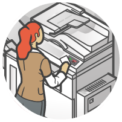

The WaveID® Story
What is the Brand Story of WaveID?
Not so long ago, people were required to do a lot of manual work in order to gain access to systems, tool, machines, pay for things, get in the door, bill print jobs to the right department and more.
Then they got the card. The card was good. It gave them access to the parking garage and the door, but that was about it. Once they got inside the building, the card went away. It got buried in a backpack or purse, stuck back into a wallet, or left to dangle meaninglessly around someone’s neck.
And then WaveID happened.
Finally, the card did more than get them into the building; it did all kinds of wonderful things. They could log-on to their computer in the morning - without entering an alphabet soup of hard-to-remember numbers, words, and phrases.
And it didn’t stop there.

They were able to release print-jobs while they stood at the printer (to keep prying eyes away from their documents, and save money and supplies in the process) and they kept going from there.
In the factories, tool cribs were accessible by those who were properly trained to use the tools, on college campuses and business cafeterias people paid for their food not with cash, but with the same card that opened their door that morning.
And that was just the beginning.
Kiosks read their badges, meetings attendance sign-in sheets were immediately obsolete. Health clubs (while valiantly trying) didn’t have to remember everyone’s names anymore. And hundreds of applications that haven’t even been born yet were made simple, by a simple word: WaveID.
- WaveID the action: Wave your ID badge or card over the WaveID on the reader and be identified
- WaveID the concept: Manual entry is a thing of the past - take a solution, any solution - single sign on, mutli-function printers, manufacturing, etc., put an RF IDeas reader, a software or hardware solution on top, and presto - you have WaveID.
How do we get this? they clamored. Why, it must be too expensive for the lay man. Where can we buy it? What does it look like? Can we touch it? Carry it? Smell it?
Their anxiety was soothed, for WaveID is not something you buy off the shelf like a book, it’s something that’s all around you. When you log-on in the morning? WaveID. When you release your print-job with a wave of your ID badge? WaveID. When you pay for your nachos and soda with your ID Card? WaveID.
WaveID is all around you.
But! The business leaders cried. What shall we do if our companies still operate in the horse and carriage days of manual entry? What of other, less reliable (or less functional) technology options? How shall we enjoy the warm embrace of WaveID?
Fear not RF IDeas assured them. For we have a robust and creative ecosystem of close friends, confidants, and partners who are certified in the WaveID ways. A simple phone call or electronic mail message can quickly get your business on the righteous path to WaveID.
But more! They cried, We want more. And so the RF IDeas field generals took to their horses, with laptops in hand and rolls of labels in their vests and took to the cities, the towns, the hamlets and showed the business leaders what WaveID could do, and how in many instances, they were already using this standard-bearer of identification and access.
And they were happy.